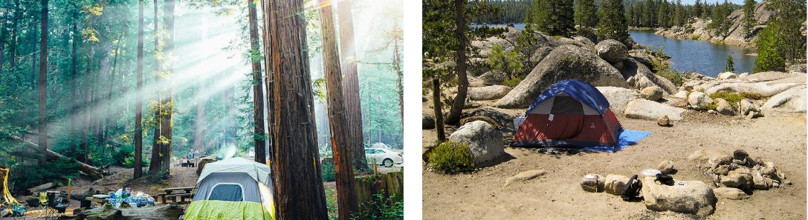
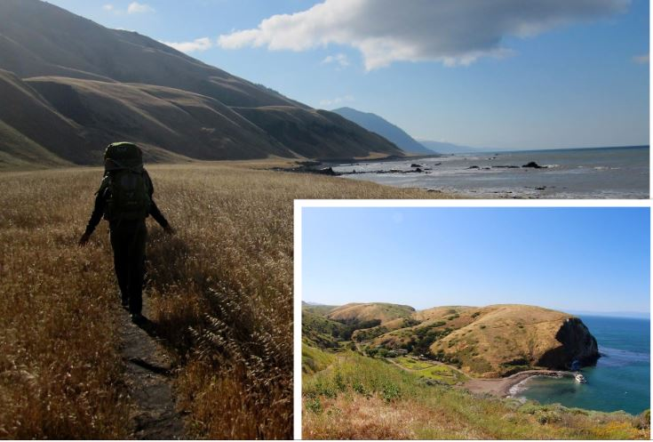
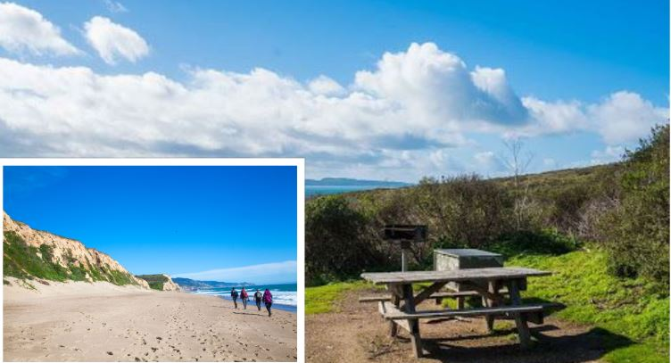
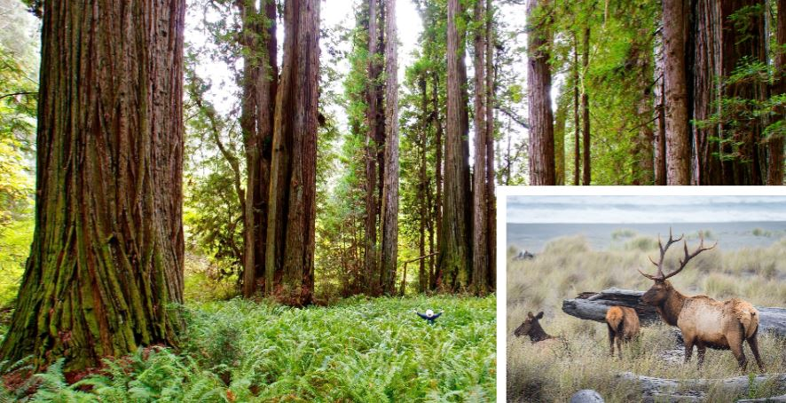
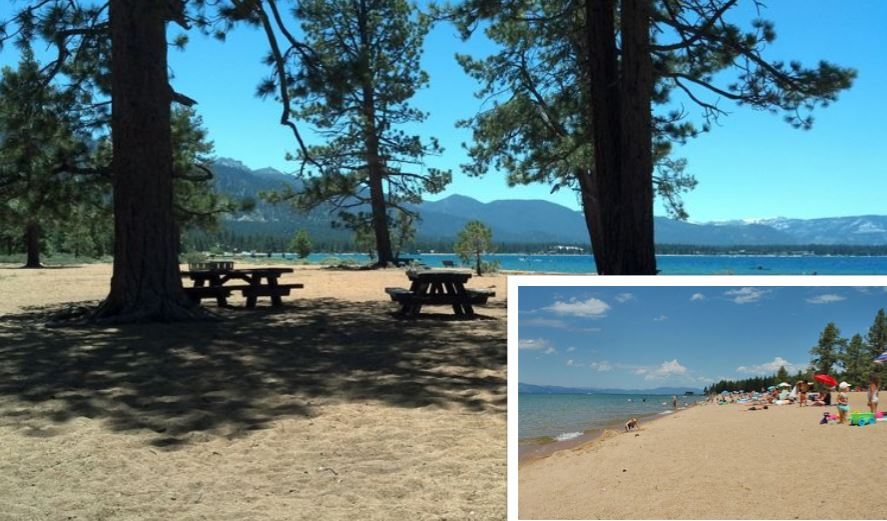
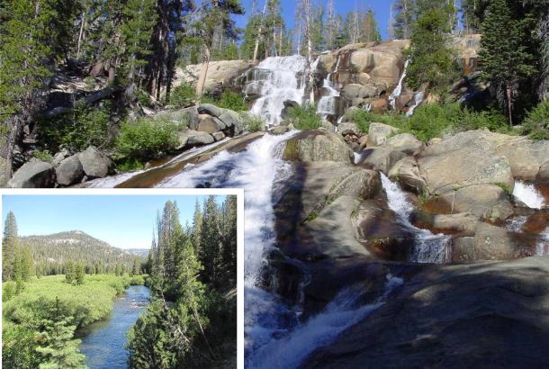

The best Places for Camping in The Golden State
You can delight in the beautiful sights of the Pacific when you camp along The golden state's shoreline.
The Golden State flaunts 840 miles of biodiverse shoreline as well as a wealth of beachside camping areas.
Wildfires still affect all-natural locations around California. For updated details ablaze, closures, and also whether it's secure at your outdoor camping location, make certain to check out the CalFire's website. Some camping areas might likewise be influenced by COVID. Verify their web sites for the most present info on camping site closures as well as guidelines.
California, The Golden State Camping
It's clear that The golden state has a few of the most beautiful coastlines in the USA. Campsite visitors come from all over the globe to drive along Highway 1's tough bluffs where you can see the location's varied wild animals. There are wild animals such as migrating whales or you might get the chance to see the energised otters. It is very easy to get lost in the peaceful atmosphere here by falling asleep under the beautiful stars or to be mesmerized by the waves of the Pacific Ocean.
There's a lot of camping on the beach along the moody Lost Shore. Backpacking in this remote stretch of land is great, except for the faint of heart.
- Shipman Creek Campsite 
- Coast Camp 
- Prairie Creek Redwoods State Park 
- Nevada Beach Campground And Day Use Pavilion  Summary
- Parking Area
- Picnic Area
- Flush Toilets
- Swimming
- Ranger Station
- BBQ
- Food Locker
- Picnic Table
- Water
- Fire Pit
- Accessible Occupant Message
- Accessibility
- Visitor Center
- Water Sports
- Interpretive Programs
- Camping
- Fishing
- Biking
- Boating
- Minaret Falls Campground 
This campsite is a hike-in outdoor tents type of camping. If you're searching for a great journey or adventure, you can backpack Northern California's appropriately "called Lost Coastline Path'. This location goes through some of the wildest areas of the state's coast. The location is too high to develop a roadway, so the only means to access its coastlines is by foot. The Lost Coast Trail is for everyone who can go through harsh environment without wimping out. It takes roughly 4 days to finish this 25.3-mile route, and also you'll be hiking on a difficult surface. Be sure to bring all your food, clothes, and also anything you may need for shelter with you. However the surroundings is remarkable: The King Range Mountains, which the route skirts, decrease directly right into the sea, finishing in black sand coastlines. You might also see the huge Roosevelt elk that call this location their home.
Exactly how to schedule the camping areaThe Bureau of Land Management, which takes care of the location, does not limit outdoor camping along the Lost Shore Route. Nevertheless, it's ideal to stay within the well established campgrounds, which are generally located right in slim valleys and also secured from the elements such as the wind. The preferred Shipman Creek camping site is one area along the path where you can camp on the coastline itself.
Coast Camp is an excellent newbie backpacking camping area in the Point Reyes National Seashore. The camping site is just a couple of hundred yards from the beach. This is where driftwood bonfires are normally allowed and gorgeous views of the Pacific Ocean are easily seen.
With a couple of standard facilities and the choice of just a short hike in, Coast Camp is fantastic for first-timers that are prepared to look beyond cars and truck outdoor camping and begin transporting their gear down the path. Both trails are captivating, and the hike you take from Bear Valley, in specific, winds through a good mix of fire-scarred forests and some open hillsides with wonderful seaside views.
The National Park Service offers a helpful map of the campgrounds in Coast Camp. The lower campsites (8 through 14) are more common and the open type, while the upper sites which are 1 through 7 provide higher privacy. There you can have some direct ocean views. The upper sites though are likewise further from the water and the water spigots. Which might be either a benefit or a downside depending upon your choice.
If you leave food ignored for even 30 seconds in Coast Camp, especially after sunset, it is likely going to be nabbed by clever raccoons that are specialists at patrolling this well-visited location. This is one of the most popular campsites and is very hard to get a spot to reserve. It is advised to book your site way ahead of time, maybe even months ahead.
The focal point of Prairie Creek is Elk Prairie. Elk Prairie is a grassy area that is surrounded by huge redwoods that offer perfect seaside sunlight. A herd of Roosevelt elk often graze on the golden grassy field. On the Gold Bluffs Beach, you can watch while more elks indulge in the rivers as waves wash ashore.
The park as a whole remains in extremely beautiful condition, yet it has a substantial path network which is an unusual mix. Here, as no place else, visitors can value the redwood forest without needing to envision what it resembled prior to the loggers.
Meadow Creek does not have a "piece de resistance" alluvial-flat loop trek to act as a centerpiece and generate visitors. The most popular destination is Fern Canyon.Fern Canyon is the only part of the park that you will find to be hectic. Even on summertime weekends the remainder of the park is never ever especially hectic, and in the winter season you can invest a whole weekend on the path without seeing even another hiker.
Throughout winter season storms, even moderate ones, Drury Parkway is typically closed for the day. If you find that the park is closed, you will not be able to reach numerous of the park's tracks like the Hope Creek loop and the Brown Creek Loop. On the other hand, it's an excellent chance to trek the Prairie Creek and Foothill Trails without the normal noisy traffic.
The Nevada Beach Campground is located in the Lake Tahoe Basin of Nevada. Minutes from the brilliant blue water of Tahoe's eastern coasts, camping areas are nestled in a sporadic forest of evergreen shrubs. The beautiful beaches and lakes offer adequate entertainment chances and dining establishments. Not to worry, some gambling establishments are also simply minutes away.
FacilitiesSome campsites are in woody locations and others are not, some sites have a great view of the lake. Different locations on the loop outermost from the lake supply the many personal privacy in between campgrounds and all parking aprons are paved. It is situated on the beach with lovely views of Lake Tahoe and the mountains.
What types of recreations are availableSimply minutes far from the camping area, 22-mile-long Lake Tahoe supplies swimming, sunbathing, boating and water skiing. Anglers can eagerly anticipate healthy fish populations of kokanee salmon and mackinaw, brown and rainbow trout. Close by, the 2.6-mile Lam Wa Tah Trail passes through the border of the lake, offering panoramas and chances for expedition.
Amenities availableThis is a really popular campground due to it's close proximity to a creek and an amazing waterfall. The 27-site camp, situated in the Reds Meadow Valley, is often visited by anglers, backpackers and hikers.
Minaret Falls Campground lies in the Devil's Postpile location of Mammoth Lakes, CA. It is a little camping area, with more than a couple of campgrounds surrounding the San Joaquin river. Some of these campsites have a view of Minaret Falls and a path along the river in between the Devil's Postpile Monument and this camping area. close-by you will find trails for anyone who wants to trek, Starkweather and Sotcher lakes and the river for some fishing, and a little shop, dining establishment and hot showers for a that charges a fee at Red's Meadow. The Red's Meadow is located at the end of the roadway. Access to the camping areas in this location is down a winding, long, mainly one-lane roadway. All camping areas in this location have vault toilets, and are just open throughout the summertime.
There are many great places to camp in California. Some places are free while some have a fee. It is up to you to choose which type of camping you want to experience. Whether it be that you do not need too many amenities or if you are the type of person who needs every type of amenity that is available. Choose a campground in california and enjoy.